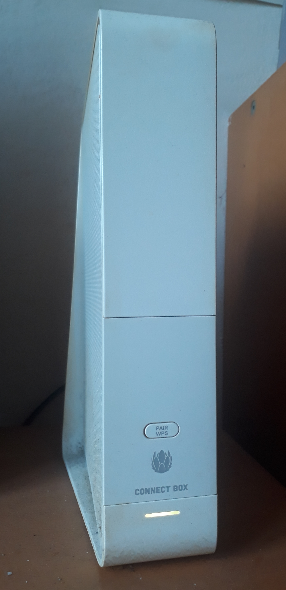

die LED-Funktion kenne ich, aber normalerweise sollte die LED, nach ca. 90 Sekunden wieder ausgehen. An der alten Buchse hat, im Betrieb nur die weiße LED geleuchtet.
LG tortoise
Bearbeitet
von wise_tortoise
hawkeye
bei der Connect Box, die oben abgebildet ist, sollte das WLAN - Symbol allerdings NICHT dauerhaft leuchten.
das WLAN - Symbol blinkt nach dem Neustart der Box, leuchtet dann dauerhaft für eine gewisse Zeit, um dann zu erlöschen.
Im regulären Dauerbetrieb leuchtet bei oben abgebildeter Connect Box ausschließlich die weiße LED ganz unten.
Fuego_d
vor 1 Stunde schrieb hawkeye:
bei der Connect Box, die oben abgebildet ist, sollte das WLAN - Symbol allerdings NICHT dauerhaft leuchten.
das WLAN - Symbol blinkt nach dem Neustart der Box, leuchtet dann dauerhaft für eine gewisse Zeit, um dann zu erlöschen.
Im regulären Dauerbetrieb leuchtet bei oben abgebildeter Connect Box ausschließlich die weiße LED ganz unten.
Denk ich mir ja, aber ist es ein Problem falls es doch dauerhaft leuchtet? Internet funktioniert problemlos.
ja, das habe ich auch angeschaut - nutzt nix, "ein Bild sagt mehr als tausend Worte", Papier ist geduldig"
(mir würden noch ein paar so "Weisheiten" einfallen, lange Rede kurzer Sinn:
im Dauerbetrieb sieht's definitiv so aus wie folgt, habe gerade meine Live fotografiert --->

hawkeye
nur nach einem Neustart ist das "grüne WLAN-Lamperl" sichtbar (ebenso wie auch jene für Telefon und Internet),
zuerst blinkend, dann dauerhaft (so wie auf dem Foto
@wise_tortoise
), um dann nach ein paar Sekunden gänzlich und dauerhaft zu erlöschen.
Fuego_d
Genau @hawkeye , in der anderen Buchse hat, im Betrieb ebenfalls nur die unterste, weiße LED geleuchted. Aber ist der Zustand meiner Connect-Box überhaupt problematisch(kann ich nicht wirklich beurteilen, ohne zu wissen worans liegt)?
r kann sein
hawkeye
solange "das Internet" (LAN und
WLAN
) klaglos funktioniert und du die DL u. UL - Werte annähernd erreichst, die dein Paket
hergibt, würde ich mir zunächst keine grauen Haare wachsen lassen ;-)
Warum die WLAN-LED jetzt bei dir dauerhaft grün weiterleuchtet, kann , fürchte ich, nur ein Techniker "diagnostizieren".
Wenn das Signal da ist, kann es ja nur an der LED selber liegen bzw. an der technischen Einheit, die diese steuert.
"Interessant" ist nur, dass das Benutzerhandbuch, sofern es sich um "unser Modell" handelt (Jahrgang usw.)
offensichtlich falsche Informationen liefert, weil die LED definitiv nicht dauerhaft grün leuchtet, sondern nur eine gewisse Zeit nach dem Neustart zuerst blinkt und dann eine gewisse Zeit dauerhaft leuchtet),
wie man auf meinem Foto sieht, sind im Normalbetrieb, wenn alle Verbindungen hergestellt sind, die 3 LEDs "unsichtbar"
hawkeye
PS.: es leuchtet nur die weiße LED ganz unten für "Gerät in Betrieb", beim (Neu-)Start der Box blinkt auch diese.
meine Box auf meinem Foto ist also definitiv nicht ausgeschaltet.
Bearbeitet
von hawkeye
Korrektur
Fuego_d
vor 5 Stunden schrieb hawkeye:
beim (Neu-)Start der Box blinkt auch diese.
Bei mir auch.
Zusätzlich habe ich das Gerät, heute noch einmal neu gestartet und mittlerweile leuchtet die LED nicht mehr dauerhaft.
{kind=link}
{kind=link}
{kind=link}